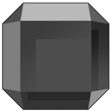

On the Subject of Gemory
“It’s the 3 of Green Rubies!” *Bomb Explodes*
On the module, there is a black square with colored gems on it, and a timer counting down for 60
seconds.
On the black square a card will be displayed. A card will be 1 to 4 of a random color and suit from the table below. Every time the timer reaches 0, the card will change.
The goal of the module is to add to and input a stack based on the displayed card.
The module backing will be 1 of 4 colors, listed in the table below. If the card's color matches the backing, add the card's suit to the stack then input the entire stack. Otherwise, if card's suit matches the backing, add the card's color to the stack then input the entire stack. Otherwise, do not input anything. However, if the card's color and suit make a gem from the table below, all you need to do is press the status light.
The number on the previous card can force changes to what the displayed card is or will do. Look for this number in the table below and the effects caused by the change will be below it.
| Names | Rubies | Emeralds | Diamonds | Amethysts |
|---|---|---|---|---|
| Suit |  | |||
| Color | Red | Green | Blue | Purple |
| Direction | Up | Right | Down | Left |
| Number | 1 | 2 | 3 | 4 |
| Effect | Next card will not add to or require input of the stack. | Next card will have their color mirrored. | Next card will have their suit mirrored. | Does nothing. |
To input the stack, simply press all the directions in the same columns as the stack.
If an input is incorrect, an input is made when all necessary inputs have been received or the timer reaches 0 and a necessary input was not received then the module will strike and the stack will be cleared.
This module will be solvable after all non-boss modules are solved. Simply select the module to solve it.
Note: The 'stack' is just a word used to mean the storage for the colors and suits, and mirrors are a flip along the middle of the table (Red<>Purple).